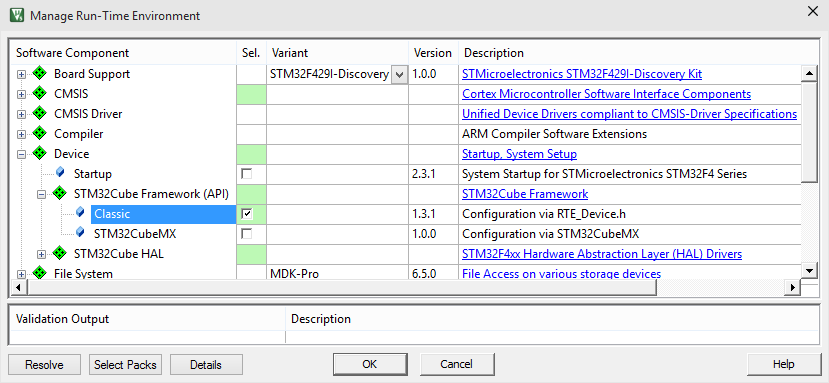
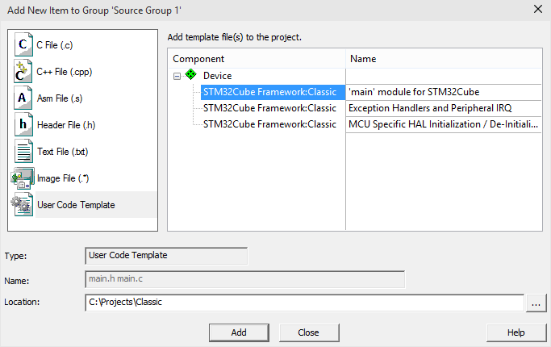
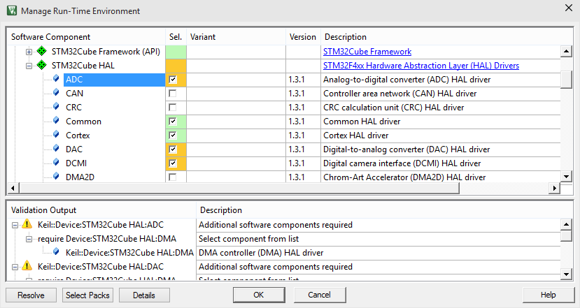
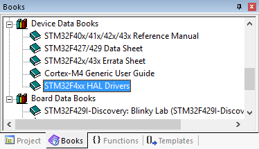
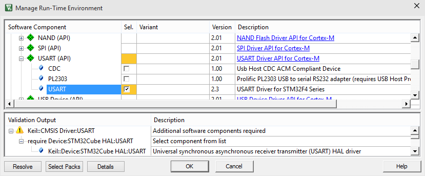

This section explains how to setup the STM32Cube HAL using the RTE_Device.h header file (the classic configuration available for most CMSIS-Driver enabled devices).
User Code Templates available for the ::Device:STM32Cube Framework:Classic help you to setup projects quickly.
| User Code Template | Description |
| 'main' module for STM32Cube | Adds main.c, main.h for the user application main routine. |
| Exception Handlers and Peripheral IRQ | Adds stm32f4xx_it.c, stm32f4xx_it.h for overwriting default exception handlers. |
| MCU Specific HAL Initialization / De-Initialization | Adds stm32f4xx_hal_msp.c for microcontroller specific peripheral initialization and de-initialization for STM32Cube HAL. |
The example project CMSIS-RTOS Blinky that is available from the Pack Installer is created using these User Code Templates.
Setup STM32Cube Framework - Classic
Step 1: Create a MDK project and select an STM32 device
Step 2: Add component Device:STM32Cube Framework (API):Classic
- Open the Manage Run-Time Environment window and select Device:STM32Cube Framework (API):Classic.
- Click Resolve to add the device startup code.

Step 3: Add user code templates for the STM32Cube Framework
- In the Project window right-click on Source Group 1 and open Add New Item ....
- Select User Code Template and add template files for Device:STM32Cube Framework:Classic as required.

Step 4: Configure System Settings
- The user code template 'main' module for STM32Cube contains the function SystemClock_Config. Adapt the parameters in this function to reflect the oscillator and clock configuration.
- System that use external (off-chip) RAM require additional #define symbols. Refer to Define Symbols for STM32Cube Framework for more information.
- Note
- Refer to Clock and System Configuration for details.
Use STM32Cube HAL
The STM32Cube HAL is an ST-specific software abstraction layer for the STM32 peripherals. It provides interfaces to the device-specific peripherals, for example an A/D converter. The steps to use STM32Cube HAL are:
Step 1: Add Device:STM32Cube HAL components
- Open the Manage Run-Time Environment window and select components from Device:STM32Cube HAL as required for your application.

Step 2: Add source code to call STM32Cube HAL
- Add source code to the project that calls the STM32Cube HAL API functions.
- The API is explained in the ST User's Manual for the HAL Drivers. This user's guide opens from the Books window.

Use CMSIS-Driver
CMSIS-Driver provide generic peripheral interfaces for middleware and application code. The CMSIS-Driver cooperate with the STM32Cube HAL. The steps to use CMSIS-Driver are:
Step 1: Add CMSIS-Driver
- Open the Manage Run-Time Environment window and select the CMSIS-Driver that are required for the application.
- Click Resolve to add required components from the STM32Cube HAL. CMSIS-Driver are implemented on top of the STM32Cube HAL when possible.

Step 2: Configure Drivers with RTE_Device.h
- CMSIS-Driver require I/O pin assignments and optional setup for the DMA. This is configured in RTE_Device.h that opens from the Project window under Device.
Step 3: Use the functionality of the CMSIS-Driver